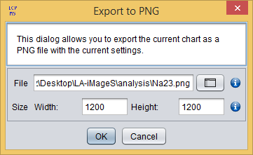
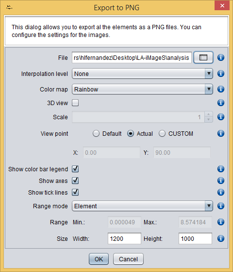

PNG (Portable Network Graphics) is a popular lossless format to store images. The export menu offers you two options to export your element view as PNG:
By clicking the Export As PNG, a new dialog will appear allowing you to select:

Export As PNG dialog
By clicking the Export All as PNG, a new dialog will appear allowing you to select:

Export All as PNG dialog